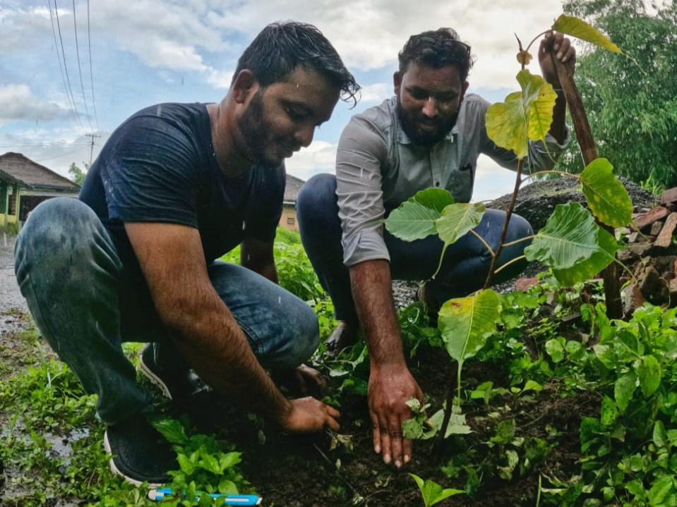

Our Projects
Go Green
India has a diverse ecosystem. But the country's forest cover is fast depleting due to industrilization and felling of trees for commercial use. We need to put a stop to this if we want to survive as a species; Junoon foundation's Go Green is a small step in the same direction.
Joy of Giving
Every year Junoon foundation collects school material and donates it to the needy students. We conduct this event as part of India's biggest donation festival. We ran a social media campaign called 'Gift-a-Notebook' on our social media platforms.

Saptarang
Our aim is to create interest among the children for arts/craft and extracurriecular activities while having fun at the same time. We taought students to make scince toys and explained the principles behind the. We took work shop on safe/unsafe touch as part of sex education.